ESSENTIAL QUESTIONHow has the history of the U.S.-Mexico border shaped the lives, culture, and political power of Latino communitiesCommunities with roots in Latin America.?
In 1848, a family living in what had been northern Mexico woke up inside a new country without moving at all. Their home, church, land, and memories stayed in the same place. The border moved over them. Overnight, they became Mexican people living inside the United States.
In 1848, some Mexican families woke up in a new country. They had not moved. Their homes and land stayed in place. The border moved over them. They became Mexican people living inside the United States.
That history still shapes Latino life today. The border is not only a line on a map. It is a story about land, labor, language, family, law, and power. Latino communities have faced exclusion, but they have also built movements, culture, unions, schools, and political voice.
That history still matters. The border is not just a line on a map. It is about land, labor, language, family, law, and power. Latino communities faced unfair treatment. They also built movements, culture, unions, schools, and political power.
✦
HISTORICAL CONTEXT
THE BORDER MOVED OVER PEOPLE
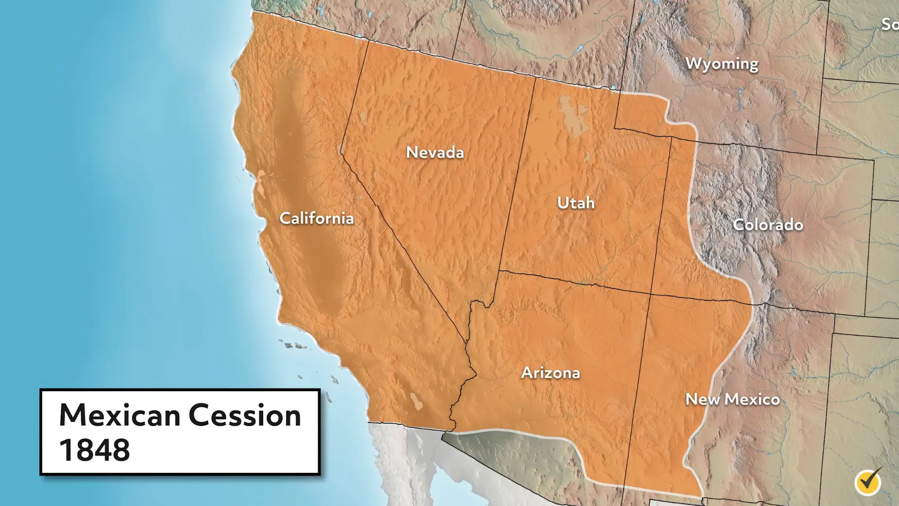
Map of the Mexican Cession after the Treaty of Guadalupe Hidalgo, 1848. Wikimedia Commons.
The U.S.-Mexico WarWar between the United States and Mexico. ended in 1848 with the Treaty of Guadalupe HidalgoThe 1848 treaty that ended the U.S.-Mexico War.. Mexico gave up a huge amount of landLand Mexico lost to the United States., including what became California, Arizona, New Mexico, Nevada, Utah, and parts of other states. The treaty promised to protect the property and rightsLand ownership and basic legal protections. of Mexican people living in the new U.S. territory.
The U.S.-Mexico War ended in 1848. The Treaty of Guadalupe Hidalgo gave the United States a huge amount of land. This land included California, Arizona, New Mexico, Nevada, Utah, and more. The treaty promised to protect Mexican people who already lived there.
Those promises often failed. Many Mexican landownersPeople who legally own land. had to prove ownership in U.S. courts. Court cases took years and cost money. Some families lost land to lawyers, taxes, squatters, or new U.S. laws. The border had moved, but power moved too.
Those promises often failed. Mexican landowners had to prove their land claims in U.S. courts. This took years and cost money. Some families lost land. The border moved, and power moved with it.
This is why Chicano and Latino history cannot be told as only an immigration storyA story about people moving between countries.. Some families crossed the border. Other families were already there when the border crossed them. Both stories shaped identity, language, and belonging.
Chicano and Latino history is not only about immigration. Some families crossed the border. Other families were already there when the border crossed them. Both stories shaped identity and belonging.
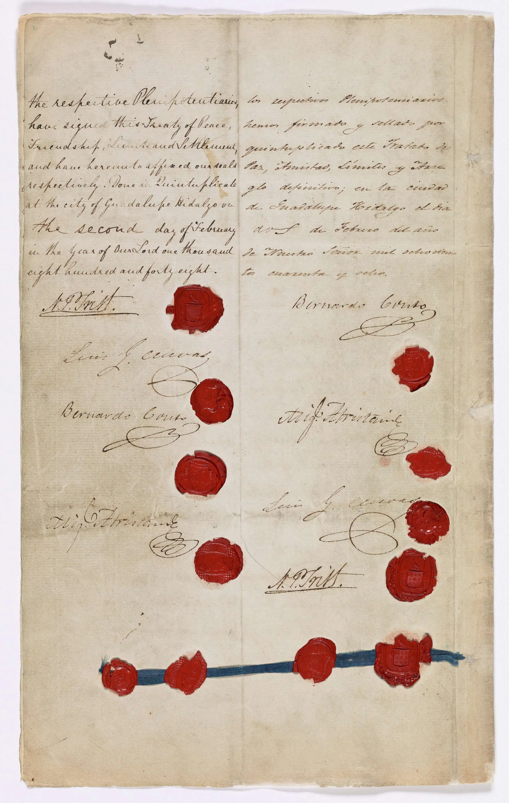
Page from the Treaty of Guadalupe Hidalgo, 1848. Wikimedia Commons / National Archives.
Real-world connection: Border history still affects debates over citizenship, land, language, and who gets treated as belonging.
Real-world connection: Border history still affects debates about citizenship, land, language, and belonging.
DID YOU KNOW
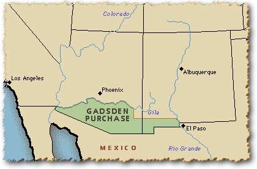
The border moved again in 1853 with the Gadsden Purchase.
The U.S.-Mexico border did not become final in 1848. Five years later, the United States bought another strip of land from Mexico for a planned southern railroad route. That means the border moved twice in one generation, while families, towns, graves, farms, and memories stayed rooted in the same ground.
FAST FACTS
WHAT THE U.S.-MEXICO BORDER CHANGE MEANT IN NUMBERS
1848YEAR THE TREATY OF GUADALUPE HIDALGO ENDED THE U.S.-MEXICO WAR AND MOVED THE BORDER
525KAPPROXIMATE SQUARE MILES OF MEXICAN TERRITORY TRANSFERRED TO THE UNITED STATES AFTER THE WAR
80KESTIMATED MEXICAN RESIDENTS WHO LIVED IN THE LAND THAT BECAME U.S. TERRITORY
1853YEAR THE GADSDEN PURCHASE MOVED THE BORDER AGAIN FOR A PLANNED SOUTHERN RAILROAD ROUTE
29KAPPROXIMATE SQUARE MILES ADDED TO THE UNITED STATES THROUGH THE GADSDEN PURCHASE
HISTORICAL CONTEXT
MEXICAN LABOR BUILT CALIFORNIA AGRICULTURE
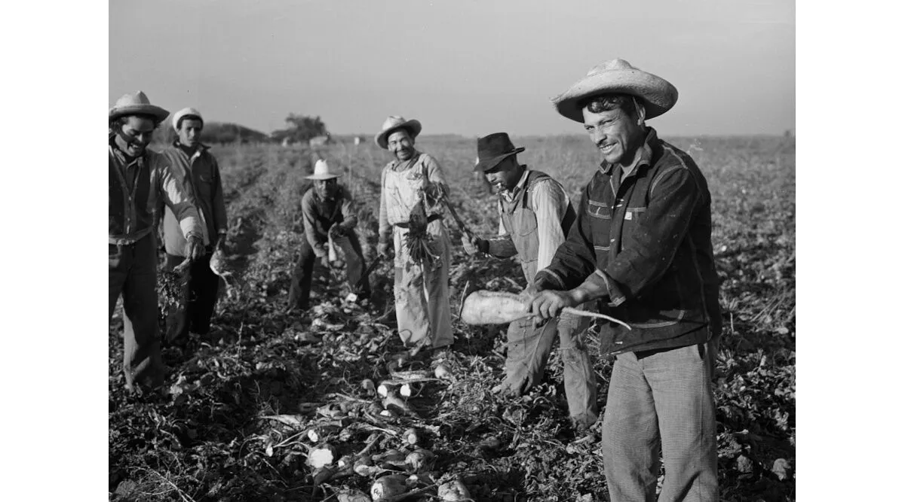
Bracero workers in California fields, 1950s. Library of Congress.
During World War II, U.S. farms needed workers. Many American workers had gone into the military or war industries. In 1942, the United States and Mexico created the bracero programA program that brought Mexican workers to U.S. farms.. Mexican men came on temporary contractsWork agreements that last for limited time. to work in fields, railroads, and other jobs.
During World War II, U.S. farms needed workers. Many American workers had gone to war jobs. In 1942, the United States and Mexico created the bracero program. Mexican men came on temporary contracts to work in fields and other jobs.
Bracero workers helped feed the United States. They harvested crops that made California agriculture powerful. But many lived in poor camps, faced wage theftWhen workers are not paid what they earned., and had little control over their working conditionsThe safety, pay, and treatment at work.. Their labor was welcomed, but their full humanity was often ignored.
Bracero workers helped feed the United States. They harvested crops in California. Many lived in poor camps. Some had wages stolen. Their work was welcomed, but they were not always treated with respect.
This pattern continued after the bracero program ended in 1964. Farms still depended on Mexican and Mexican American labor. Workers still faced low pay, pesticides, heat, and unsafe housing. The food system depended on people whose rights were often limited.
This pattern continued after 1964. Farms still depended on Mexican and Mexican American workers. Workers still faced low pay, pesticides, heat, and unsafe housing. The food system depended on people with limited rights.
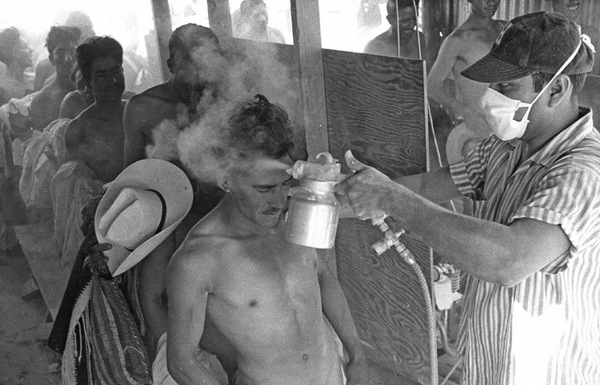
Bracero workers being processed or inspected, 1940s-1950s. Library of Congress.
Undocumented immigrationMigration without official legal status. is also an economic and human story. Employers have long wanted low-wage labor, especially in agriculture, construction, service work, and domestic work. Migrants often come because work, family, safety, or survival pulls them across borders. The law may call a person undocumented, but the economy often depends on that person's work.
Undocumented immigration is also about work and human life. Employers often want low-wage labor. Migrants may come for work, family, safety, or survival. The law may call someone undocumented. The economy may still depend on their work.
Real-world connection: When people talk about immigration, they are also talking about food prices, labor rights, family separation, safety, and the value of human work.
Real-world connection: Immigration debates are also about food prices, labor rights, family separation, safety, and work.
RESISTANCE AND AGENCY
FROM ZOOT SUITS TO THE CHICANO MOVEMENT
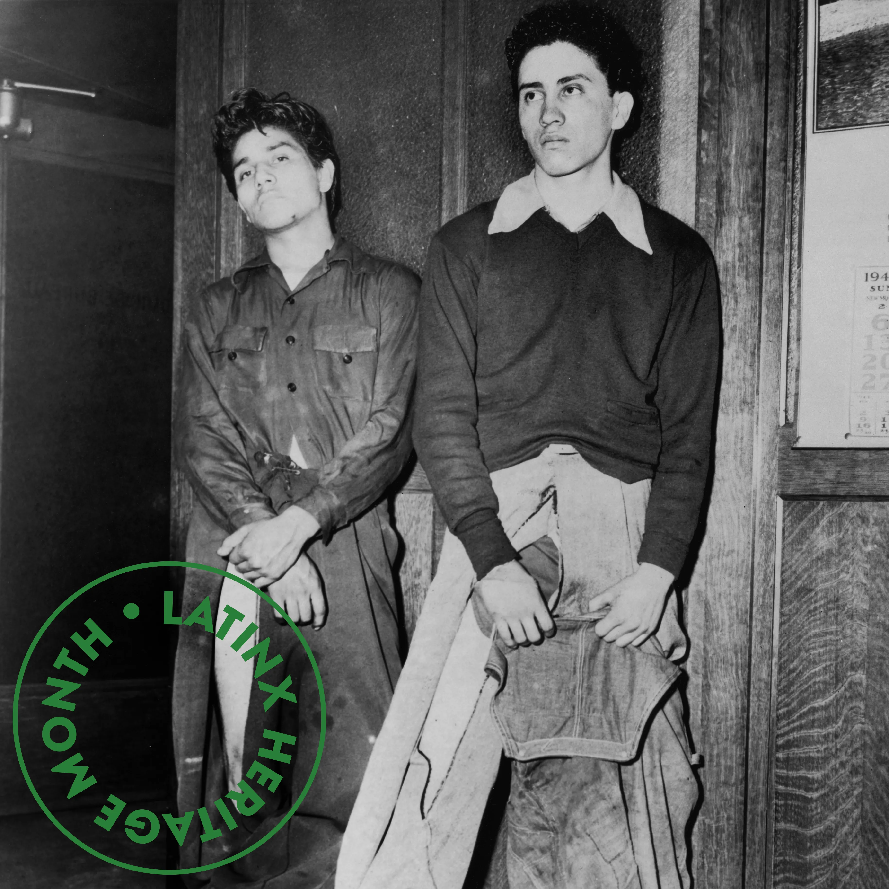
Mexican American youth and zoot suit style, Los Angeles, early 1940s. Wikimedia Commons / Library of Congress.
In Los Angeles during the 1940s, many Mexican American young peopleYoung people with Mexican roots living in the U.S. created their own style. Some wore zoot suits with long coats, wide pants, and sharp hats. The style was bold, proud, and visible. It said that young people had a right to take up space.
In Los Angeles in the 1940s, many Mexican American young people created their own style. Some wore zoot suits. These suits had long coats, wide pants, and sharp hats. The style was bold and proud. It said young people had a right to be seen.
In 1943, white sailors and soldiers attacked Mexican American youth in Los Angeles during the Zoot Suit Riots1943 attacks on Mexican American youth in Los Angeles.. Police often arrested the Mexican American youth who had been attacked. Newspapers blamed the victims and described them as criminals. The riots showed how racism could turn culture into a target.
In 1943, white sailors and soldiers attacked Mexican American youth in Los Angeles. These attacks became the Zoot Suit Riots. Police often arrested the youth who had been attacked. Newspapers blamed the victims. The riots showed how racism can target culture.
In the 1960s and 1970s, the Chicano movementA movement for Mexican American rights and pride. pushed back against unfair treatment. Students demanded better schools and bilingual educationSchooling that supports learning in two languages.. Farm workers demanded safer conditions and fair pay. Activists demanded political representationHaving leaders who speak for your community. and respect for Mexican American history.
In the 1960s and 1970s, the Chicano movement pushed back. Students wanted better schools and bilingual education. Farm workers wanted safer conditions and fair pay. Activists wanted political power and respect for Mexican American history.
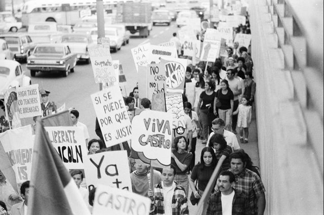
East Los Angeles student walkouts, 1968. Chicano students demanded better schools and respect for their communities. Wikimedia Commons.
Dolores Huerta and César Chávez helped build the United Farm WorkersA union fighting for farm worker rights.. They organized strikesWhen workers stop working to demand change., boycottsRefusing to buy something as protest., marches, and community meetings. The Delano grape strikeA major farm worker strike that began in 1965. began in 1965 when Filipino farm workers walked out, and Mexican American workers joined them. The movement showed that farm workers could use collective power.
Dolores Huerta and César Chávez helped build the United Farm Workers. They organized strikes, boycotts, marches, and meetings. The Delano grape strike began in 1965. Filipino farm workers walked out first, and Mexican American workers joined them. The movement showed farm workers had power together.
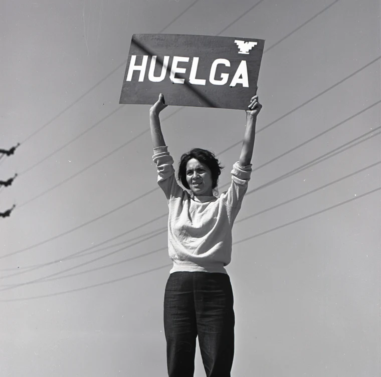
Dolores Huerta at a farm worker march or rally. Wikimedia Commons.
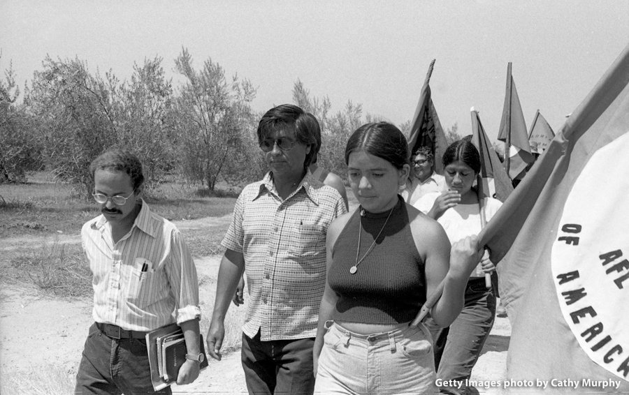
César Chávez marching with United Farm Workers, 1960s-1970s. Wikimedia Commons.
The Chicano movement won real changes. It helped expand bilingual education, Chicano studies programs, labor protections, voter registrationSigning up so a person can vote., and Latino political representation. It also changed culture by making murals, music, theater, and community pride part of political life.
The Chicano movement won real changes. It helped expand bilingual education and Chicano studies. It supported labor rights and voter registration. It also built pride through murals, music, theater, and community action.
Real-world connection: Student protests and farm worker organizing show how communities can turn daily unfairness into public demands for change.
Real-world connection: Student protests and farm worker organizing show how communities can demand change.
ART SPOTLIGHT
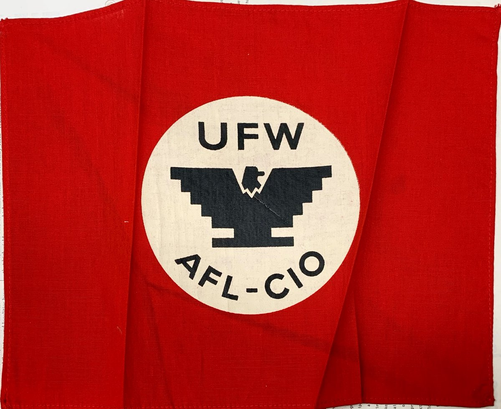
UNITED FARM WORKERS HUELGA EAGLE FLAG OR POSTER, 1960S-1970S. WIKIMEDIA COMMONS.
The UFW eagle was designed to be simple enough that workers and supporters could draw it by hand. That mattered because a movement needed a symbol that could travel fast: onto signs, buttons, flags, walls, and picket lines. The image turned a labor demand into something people could recognize from across a street.
PRESENT REALITY
LATINO POLITICAL AND CULTURAL POWER TODAY
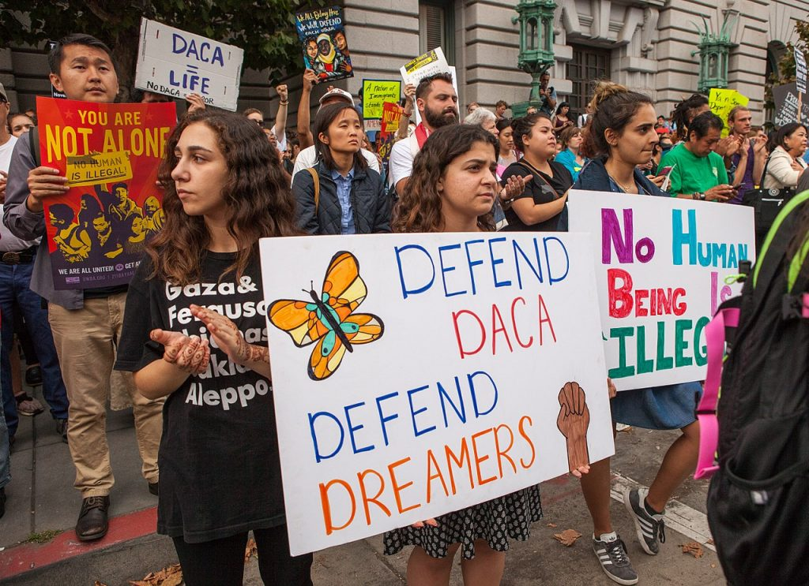
DACA recipients and supporters at a rally, 2010s-2020s. Wikimedia Commons.
DACAA program protecting some undocumented youth from deportation. stands for Deferred Action for Childhood ArrivalsThe full name of DACA.. It protects some undocumented people who came to the United States as children from deportationBeing forced to leave a country by the government. for a period of time. DACA does not create full citizenship. It shows how young immigrants can live, study, work, and belong in a country that may still deny them permanent safety.
DACA protects some undocumented people who came to the United States as children. It can protect them from deportation for a period of time. It does not create citizenship. It shows how young immigrants can belong but still live with uncertainty.
Latino communities have also become central to California politics and culture. Latino voters, organizers, artists, workers, small business owners, students, and elected leaders shape the state every day. Spanish-language mediaNews, radio, and shows made in Spanish., murals, music, food, family networks, and bilingual classroomsClassrooms where students use two languages. are part of California's public life.
Latino communities are central to California today. Latino voters, organizers, artists, workers, students, and leaders shape the state. Spanish-language media, murals, music, food, family networks, and bilingual classrooms are part of daily life.
This power did not appear from nowhere. It grew from generations of people who defended land, crossed borders, harvested food, fought discrimination, walked out of schools, organized unions, and voted. Latino identity is not one single story. It includes many national backgrounds, languages, races, migration stories, and political beliefs.
This power did not appear from nowhere. It came from many generations. People defended land, crossed borders, harvested food, fought racism, organized unions, and voted. Latino identity is not one single story. It includes many backgrounds, languages, races, and beliefs.
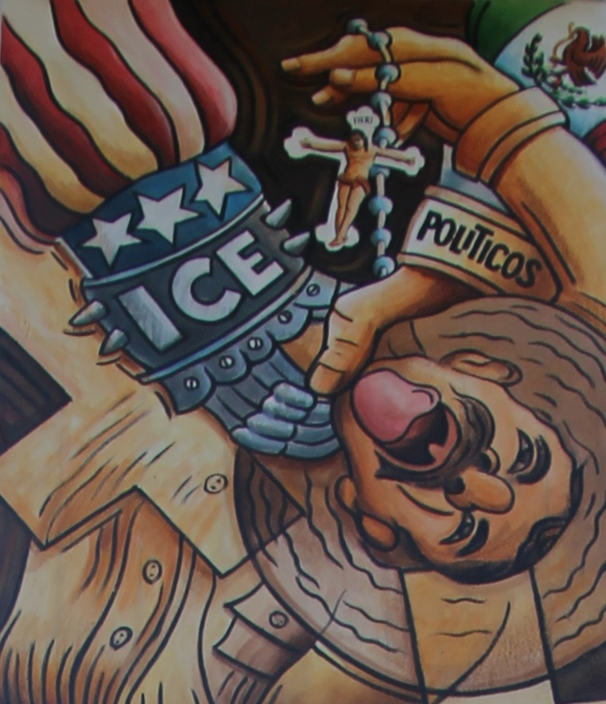
Chicano mural in California. Murals often turn public walls into community memory. Wikimedia Commons.
Real-world connection: Latino power today is not only voting power. It is also cultural powerInfluence through art, language, music, and identity., labor powerPower workers have when they organize together., language power, and the power to tell the story from inside the community.
Real-world connection: Latino power today is more than voting. It is culture, work, language, and the power to tell your own story.
✦
PRIMARY SOURCE
PRIMARY SOURCE MOMENT
Treaty of Guadalupe Hidalgo signing, ratification, or exchange ceremony, 1848. Wikimedia Commons.
PRIMARY SOURCE
"Mexicans now established in territories previously belonging to Mexico... shall be free to continue where they now reside."
Treaty of Guadalupe Hidalgo, Article VIII, 1848
This source directly connects to the essential question because it shows how the border changed people’s legal status, land, and sense of belonging.
QUESTION 1: What promise did the treaty make to Mexican residents living in the new U.S. territory?
QUESTION 2: How does this source connect to the essential question about border history, culture, and political power?
THEN AND NOW
THE BORDER IS A LINE ON A MAP, BUT PEOPLE TURN IT INTO FAMILY, WORK, CULTURE, AND POLITICAL POWER.
1940S-1950S
Mexican workers helped build California agriculture while living with limited rights.
TODAY
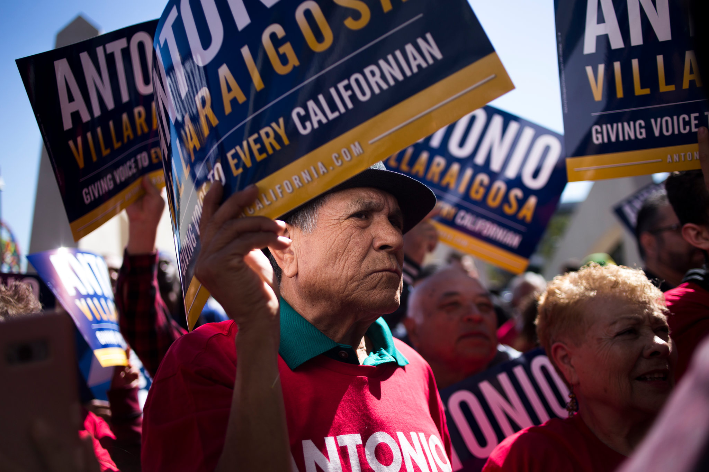
Latino communities shape politics, culture, schools, labor, and public life today.
The first image shows people whose labor was needed but whose power was limited. The second image shows what changes when communities keep organizing long after the workday ends.